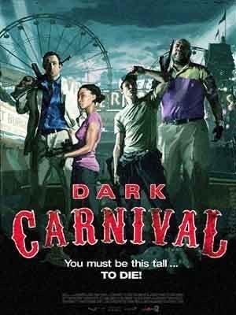
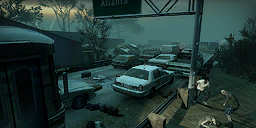
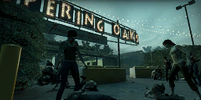
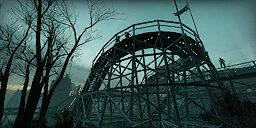
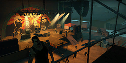

Campaña2
Campaña2
Dark Carnival

Descripción:
La campaña comienza después de The Passing, donde los Survivors viajaron a Nueva Orleans con el stock car de Jimmy Gibbs Jr,
que habían tomado del Liberty Mall. Su suerte se acaba cuando llegan a una autopista llena de "millas" de coches aparcados que son imposibles
de conducir, lo que les obliga a avanzar a pie. Más tarde notan que los reflectores vienen del parque de atracciones Whispering Oaks mientras se dirigen al motel.
Después de descubrir que el centro de evacuación ha sido desierto e invadido como en Liberty Mall, continúan avanzando para intentar encontrar otros sobrevivientes
dentro del parque. En el camino encuentran un helicóptero buscando supervivientes y consigue llamar la atención del piloto iniciando la final del concierto de los Midnight
Riders en el estadio Peach Pit.
Imagenes de la campaña:




-Volver a Campañas
-Anterior Campaña
-Siguiente Campaña